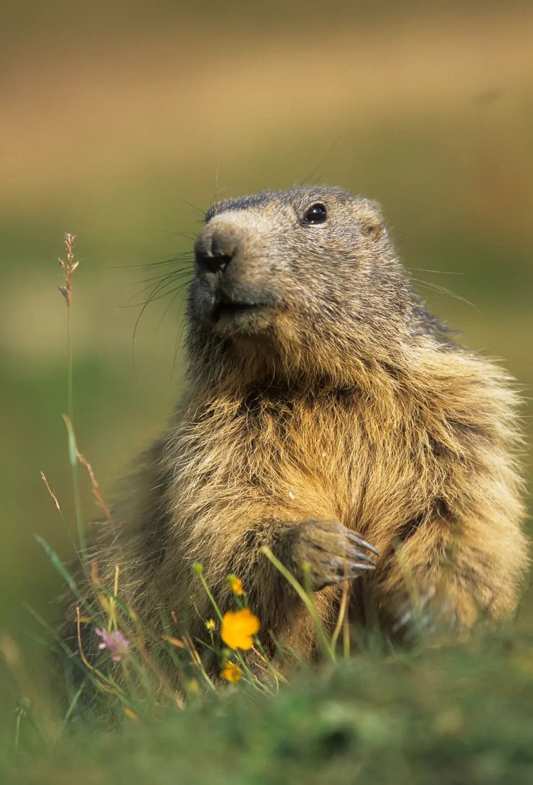
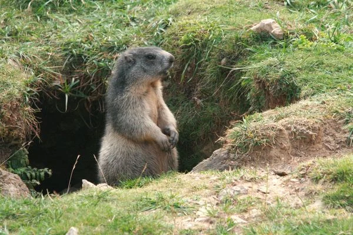

Faune · flore · géologie
Observation des marmottes
Partez en montagne à la rencontre de cet animal emblématique des Alpes.

Cet été, partez en montagne à la rencontre des marmottes. Elles vivent dans les alpages, près des sentiers et sur les pentes ensoleillées. Ce petit animal fascinant est facile à observer dans tous les massifs français. Vous l’avez d’ailleurs certainement entendu siffler !
Longtemps chassées, les marmottes sont désormais protégées et cohabitent avec les randonneurs. Grâce aux parcs naturels et aux réserves, elles se sont habituées à la présence humaine. Les voir jouer et se chamailler est un véritable spectacle, une belle récompense après une randonnée.
À quelle période et où observer les marmottes ?
Les marmottes sont présentes dans de nombreux massifs français. L’important est d’être au bon endroit : elles affectionnent les prairies d’altitude, entre 800 et 3 000 mètres. Pour ne pas les déranger, restez à distance des entrées de galeries et des rochers où elles prennent leurs bains de soleil.
Choisissez également le bon moment : les matinées ensoleillées, de mai à septembre, sont particulièrement propices à l’observation.
Qu’est-ce que l’hibernation ?
L’hibernation est une réponse adaptée aux conditions extrêmes de l’hiver. En septembre, la marmotte coupe de l’herbe, la fait sécher et garnit son terrier pour préparer la saison froide. Les marmottes entrent en hibernation en octobre pour environ six mois.
Pour survivre au froid, leur température corporelle chute de 37 °C à environ 5 °C et leur rythme cardiaque diminue considérablement. Elles hibernent en groupe, collées les unes aux autres, et se réveillent plusieurs fois au cours de cette période.
À quoi ressemble leur terrier ?
Le terrier d’une marmotte est une véritable forteresse souterraine. Creusé dans la terre meuble, il comporte plusieurs galeries et chambres utilisées pour dormir, stocker de la nourriture ou élever les petits. En hiver, la neige joue un rôle essentiel : elle agit comme un isolant thermique naturel et protège le terrier du gel.

Cette sortie permet aussi de mieux connaître leurs comportements, leur alimentation et leurs prédateurs.
Contactez-moi pour organiser une observation à la journée ou à la demi-journée.